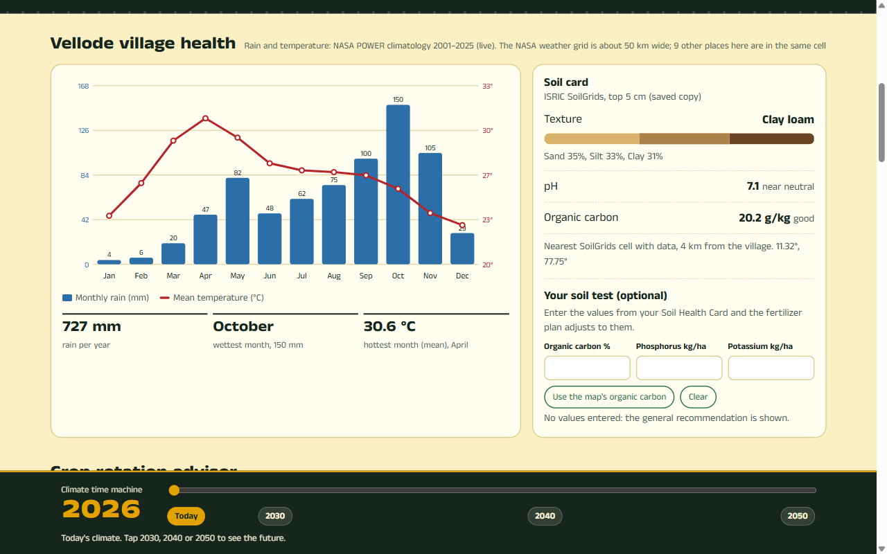
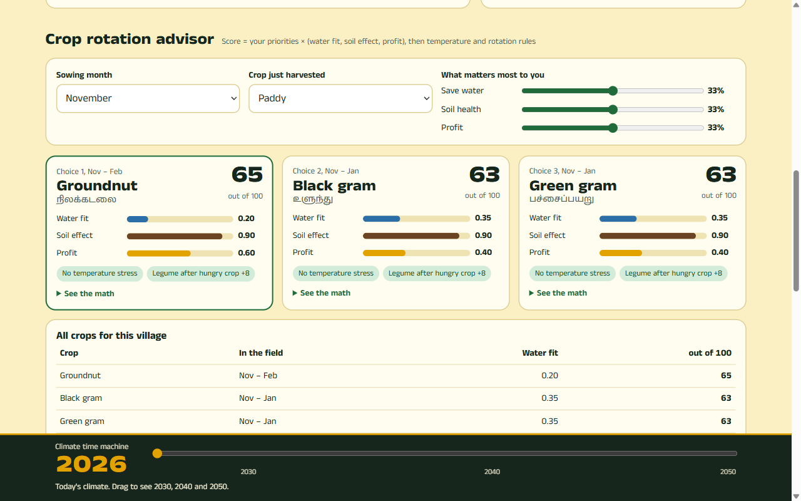
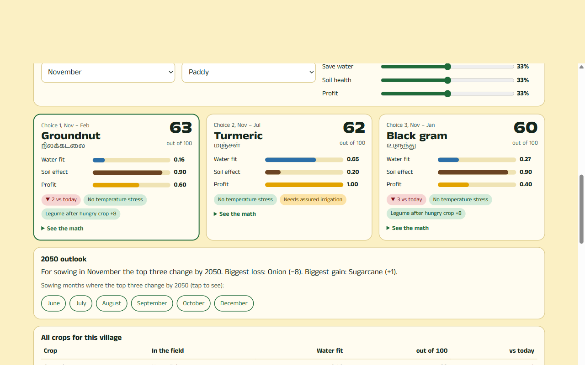
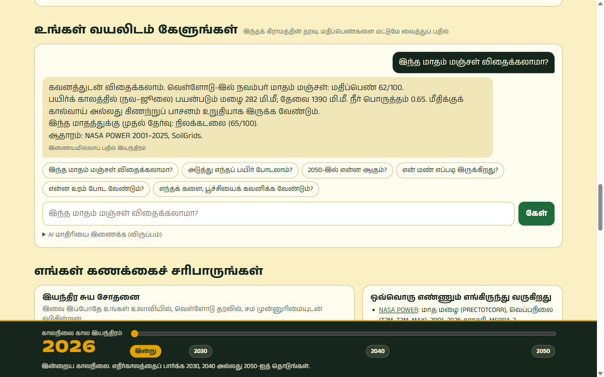

UZHAVAN is a free web page, in Tamil and English, that tells a farmer which crop to sow next, why, and whether that choice still holds in 2050.
A farmer has to choose the next crop months before knowing how the season will go. The rain is changing, and the data that could help is free but hard to reach: it sits behind technical websites, in English, in units nobody farms in.
The farmer picks a village. The page pulls that village's rain and temperature from NASA and its soil from a world soil map, then does five things:
| Feature | What the farmer sees | |
|---|---|---|
| 1 | Village health | A chart of rain and temperature for each month, and a soil card (soil type, acidity, organic matter). |
| 2 | Crop rotation advisor | The three best crops to sow next, each with a score out of 100. The score is split into water, soil and profit so the farmer can see why. |
| 3 | Climate time machine | A slider from 2026 to 2050. As it moves, the climate shifts using NASA's projections and the crops are re-ranked. |
| 4 | Ask your field | A chat box. The farmer asks in Tamil or English and gets an answer built only from that village's numbers. |
| 5 | Fertilizer plan | For each crop: how much chemical fertilizer (as bags of urea, super phosphate and potash per acre), how much farmyard manure, and which biofertilizer, from the published recommendation. |
It works for three pilot places with the same engine: Vellode (Erode, India), Fresno County (California, USA) and Kano (Nigeria). Tapping the map loads the climate of any other place on Earth.
"UZHAVAN turns 25 years of free NASA data into one screen a Tamil farmer can act on: which crop next, why, and whether it still works in 2050."
Four screens. Know what each one is before you open it.




| Criterion | What to point at |
|---|---|
| Impact | A real district (Erode), a real crop economy (turmeric), in the farmer's language, free, on any phone. The same page works on three continents. |
| Creativity | The time machine, and the fact that the farmer's own priorities are the weights in the formula. |
| Validity | Every number is traced to a named source on the page. The page tests its own arithmetic. Estimates are labelled as estimates. |
| Presentation | A rehearsed three-minute demo, a bilingual screen, and nothing that fails if the Wi-Fi does. |
Ten minutes of preparation. Tick each box.
Do the demo on page 5 once on your own, slowly, reading each "You should see" column. If what you see matches, you are ready. It takes about five minutes the first time.
About three and a half minutes. Start from the setup on page 4 and say the middle column as you act. With only one minute, do steps 3, 7 and 9.
| Do this | Say this | You should see | |
|---|---|---|---|
| 1 | Start at the top of the page. Point at the three village buttons. | "A farmer picks their village. This is Vellode, near Erode, the turmeric city." | Vellode highlighted in yellow. Badge says "Live NASA data". |
| 2 | Scroll down to the chart. | "This is 25 years of NASA rain and temperature. Most rain comes in October, with the north-east monsoon. On the right is the soil, from SoilGrids." | Tallest blue bar on October (150). About 727 mm of rain a year. Soil card says "Clay loam". |
| 3 | Scroll to the three crop cards. | "The farmer has just harvested paddy and wants to sow in November. The page recommends groundnut, onion and black gram, each with a score out of 100." | Groundnut 65, Onion 64, Black gram 63. |
| 4 | Click See the math on the groundnut card. | "Nothing is hidden. Here is the rain, the water the crop needs, the profit figure and where it came from, and the final sum." | A box of arithmetic ending in "= 65 / 100". |
| 5 | Click Fertilizer plan on the same card. | "It also says what to feed the crop. For rainfed groundnut: 9 kilos of urea, 25 of super phosphate and 30 of potash per acre, plus farmyard manure and Rhizobium, from Tamil Nadu Agricultural University's guide." | N 10 : P₂O₅ 10 : K₂O 45 kg per hectare, then the bag amounts, "Organic" and "Biofertilizer" lines, and the source. |
| 6 | Drag Save water and Soil health all the way left. Leave Profit where it is. | "Every farmer is different. This one cares most about profit, so turmeric jumps to first place. The farmer's priorities are the weights in the formula." | Cards slide. Turmeric is now first. Then put both sliders back to the middle. |
| 7 | Drag the bar at the bottom of the screen slowly from 2026 to 2050. | "Now the time machine. This uses NASA's NEX-GDDP-CMIP6 climate projections. By 2050 Vellode is about one degree warmer. Onion loses 8 points to heat and drops out of the top three. Turmeric moves in." | Groundnut 63, Turmeric 62, Black gram 60. Red "vs today" chips. The "2050 outlook" panel says the top three change. |
| 8 | Click Kano at the top (leave the slider on 2050), scroll to the cards. | "Same engine, another continent. In Kano, Nigeria, onion is first today. By 2050 tomato overtakes it." | Tomato 54 first, Onion 51 second. |
| 9 | Click Vellode. Drag the bottom bar back to 2026. Click தமிழ். Scroll to the chat and tap the first suggested question. | "And the farmer can simply ask, in Tamil: can I sow turmeric this month? The answer uses only this village's numbers. It never invents one." | A Tamil answer with "62/100" and a note that the top choice is groundnut (65/100). |
| 10 | Scroll to Check our work (in Tamil: எங்கள் கணக்கைச் சரிபாருங்கள்). | "The page tests its own arithmetic every time it loads, and lists where every number comes from. Open NASA data, zero cost, any village, in the farmer's own language. That is UZHAVAN." | Three green ticks: 65, 75, 0. A list of data sources on the right. |
A judge will ask. You need four sentences and one example.
water fit = (0.7 x rain in the crop's months + irrigation) / water the crop needs (at most 1)
base = average of water fit, soil effect and profit, weighted by the sliders
score = 100 x base x (1 - 0.6 x temperature stress)
- 50 if it is the same plant family as the last crop
+ 8 if a pulse follows a soil-draining crop
Only 70% of rain counts, because some runs off or evaporates. Irrigation counts as 45% of the crop's need, for irrigated crops only.
| Part | Working | Result |
|---|---|---|
| Water fit | Rain from November to February is 145 mm. 0.7 x 145 = about 101 mm. Groundnut needs 510 mm. 101 / 510 | 0.20 |
| Soil effect | Groundnut is a legume: it adds nitrogen | 0.90 |
| Profit | Rank 3 of 5 (net return Rs 21,632 per hectare, Government of India data) | 0.60 |
| Base | Sliders equal, so a plain average: (0.20 + 0.90 + 0.60) / 3 | 0.566 |
| Temperature | Season average 24.0 °C, inside groundnut's comfortable 22 to 32 °C | no loss |
| Rotation | Paddy is a cereal, groundnut is a legume: different family | no penalty |
| Bonus | A legume after soil-draining paddy | +8 |
| Score | 100 x 0.566 + 8 = 64.6 | 65 |
Vellode gets about 727 mm of rain a year. Turmeric needs about 1,390 mm. A simple "rain against need" formula would tell Erode, the turmeric city, to stop growing turmeric. That would be wrong: turmeric there is grown on canal and well water. UZHAVAN counts that irrigation, so turmeric sown in June after paddy scores 65 with the note "needs assured irrigation". Paddy after paddy, on the other hand, scores 0.
Name the source when you show the number. Judges mark this under "Validity".
| Source | What it gives | In plain words |
|---|---|---|
| NASA POWER | Monthly rain and temperature, 2001 to 2025 | NASA's free weather record for any point on Earth. The page calls it live. |
| NASA NEX-GDDP-CMIP6 | The climate in 2030, 2040 and 2050 | NASA's climate projections. We use the average of five models under a middle-of-the-road emissions path called SSP2-4.5. |
| NASA GIBS, MODIS NDVI | The green layer on the map | A satellite picture of how green the vegetation is. |
| ISRIC SoilGrids | Soil type, acidity, organic carbon | A world soil map at 250 m detail. |
| TNAU Agritech; FAO manual | How much water each crop needs, and for how long | Tamil Nadu Agricultural University for local crops, the UN's FAO for the rest. |
| FAO EcoCrop | The temperature range each crop likes | A UN database of crop requirements. |
| Govt of India cost of cultivation, 2021-22 | Profit rank for Tamil Nadu crops | Official figures of cost and income per hectare. |
| Tamil Nadu statistics; USDA census | Which crops are irrigated | The share of each crop's area that is irrigated. |
| Fresno County Crop Report 2025; IITA study | Profit rank for Fresno and Kano | County farm-value figures for Fresno, a field study for Kano. |
| TNAU Crop Production Guide 2020; CDFA guidelines; Nigeria FMARD | Fertilizer plan | The official fertilizer recommendation for each crop in Tamil Nadu, California and Nigeria. |
| FAO Bulletin 16 | Which crops build or drain the soil | How much nitrogen legumes add and how much other crops take. |
The full list with links is on the page under "Where every number comes from", and in the README of the code repository.
"See the math" on every card marks each estimate. Being open about this earns marks; hiding it loses them.
Short, honest answers. If you do not know, say "I will check that" rather than guess.
| Question | Answer |
|---|---|
| Is the 2050 result a prediction? | No. It is a scenario. We take NASA's projected change for each month from five climate models and add it to today's climate. It shows direction, not a forecast for a given year. |
| How much warmer is 2050? | About 0.9 °C at Vellode with 6% more rain over the year, 1.1 °C at Fresno and 1.0 °C at Kano. The change is modest, so most scores move by a few points. |
| Why does turmeric appear when Erode gets so little rain? | Because it is irrigated. The score counts canal and well water for irrigated crops and flags "needs assured irrigation". |
| Why is paddy after paddy zero? | Growing the same plant family twice builds up pests and drains the same nutrients. The rule takes 50 points off, which brings it to zero. |
| Where does the profit number come from? | Published figures: Government of India cost-of-cultivation data for Tamil Nadu, the county crop report for Fresno, a field study for Kano. Open "See the math" to show the figure. |
| Where do the fertilizer amounts come from? | The official recommendation for each place: Tamil Nadu Agricultural University's Crop Production Guide 2020 for Vellode, California's CDFA guidelines for Fresno, Nigeria's federal recommendation for Kano. The bag amounts are simple arithmetic: urea is 46% nitrogen, super phosphate 16% phosphate, potash 60%. It is a general dose; a soil test should adjust it. |
| Does the chat use AI? Can it make things up? | The answers you saw come from the scoring engine itself, so every number in them is one the page computed. There is an optional setting to connect an AI model, which is told to answer only from the village's data. |
| Did you use AI to build this? | Yes, and it is disclosed on the project page. The code and the Tamil text were drafted with an AI assistant and reviewed by the team. |
| What happens with no internet? | The page keeps a saved copy of the NASA data for the three villages. Scores and chat answers still work. The badge changes to "Saved NASA data". |
| Why only three villages? | Three are fully set up with crop lists and 2050 projections. Tapping the map loads live NASA climate for any place; it borrows the nearest pilot's crop list and has no 2050 data yet. |
| How is this different from other crop apps? | The arithmetic is visible, the farmer's priorities are the weights, it speaks Tamil first, and it shows what 2050 does to today's choice. |
| What would you do next? | Add soil-moisture data from NASA's SMAP satellite and from NISAR, the radar satellite built by NASA and ISRO. Check the crop table with farmers and the local agricultural office. Add more villages and languages. |
| Has a farmer used it? | Answer only with what your team actually did. Write it here: |
| Word | What it means |
|---|---|
| Crop rotation | Growing a different kind of crop after each harvest so the soil recovers and pests do not build up. |
| Legume / pulse | Crops such as groundnut, black gram and green gram. Their roots put nitrogen, a plant food, back into the soil. |
| Climatology | The average weather over many years. Here, the average of 2001 to 2025. |
| NASA POWER | A free NASA service that gives weather data for any point on Earth. |
| SoilGrids | A free world map of soil properties, made by ISRIC in the Netherlands. |
| NDVI | A measure of how green and healthy vegetation looks from a satellite. |
| NEX-GDDP-CMIP6 | NASA's set of climate projections up to 2100, detailed enough to use for one village. |
| SSP2-4.5 | One possible future: a "middle of the road" path where emissions neither stop nor explode. |
| N, P, K | The three main plant foods: nitrogen (N), phosphorus (written P₂O₅) and potassium (written K₂O). Urea supplies N, super phosphate P, potash K. |
| Biofertilizer | Helpful bacteria such as Rhizobium or Azospirillum, mixed with the seed or soil, that help the plant get nutrients. |
| Water fit | Our name for "how much of the crop's water need is covered", from 0 to 1. |
| North-east monsoon | The rainy season from October to December that brings most of Erode's rain. |
| Open data | Data anyone may use for free, without a login. |
"Farmers choose their next crop months ahead, and the rain is no longer what it was. NASA has free data on the rain, heat and soil of every field on Earth, but no farmer can use it as it is.
UZHAVAN puts it on one screen, in Tamil. The farmer picks a village and sees its rain, temperature and soil. The page recommends three crops to sow next, each with a score out of 100, and shows the arithmetic behind every score. Three sliders let the farmer say what matters most: saving water, soil health or profit.
Then the time machine: drag to 2050, and NASA's climate projections re-rank the crops. In Vellode, onion drops out of the top three because of heat. The farmer can also just ask a question in Tamil.
It runs today for Erode, California and Nigeria with the same engine, costs nothing, and keeps working without internet."
| You see | What it means and what to do |
|---|---|
| Badge says "Saved NASA data" | The internet or NASA's server is slow. The demo still works with the saved copy. Say: "It has switched to its saved copy; this is the offline mode." Carry on. |
| Soil card says "(saved copy)" | Normal. The soil server is often slow. The numbers are the same. |
| The map is grey or blank | Map pictures need internet. Skip the map; nothing else depends on it. |
| The crop cards show different crops or numbers from page 5 | Check the sowing month is November, the last crop is Paddy, the sliders are in the middle and the bottom bar is where the step says. Any other setting gives different, still correct, results. |
| The page will not load at all | Use the phone. If that fails too, use the screenshots on page 3 and give the two-minute pitch on page 9. |
| Everything is in Tamil and you cannot read it | Tap English at the top right of the dark header. |
| A red cross in "Check our work" | This should not happen. Reload the page once (F5). If it stays, do not hide it: say the page has caught a problem with its own data, and move on. |
The whole app is one file, index.html, in the code repository. Download the repository, open a terminal in that folder, and run:
python -m http.server 8765
Then open http://localhost:8765 in a browser. No install, no login, no key.